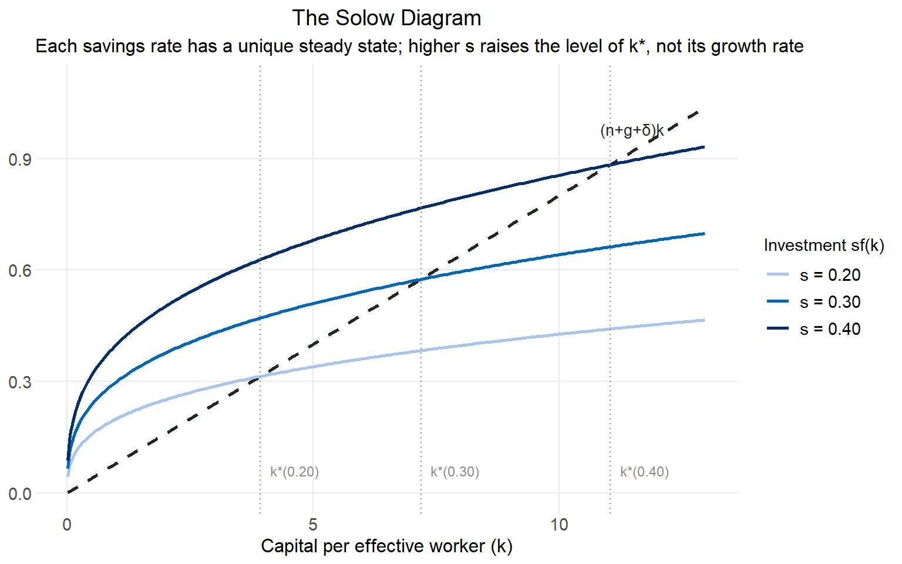
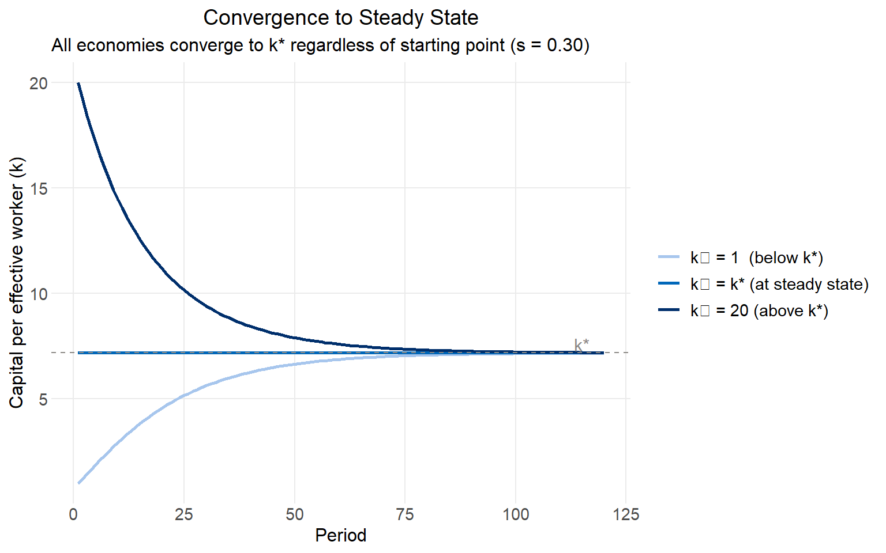
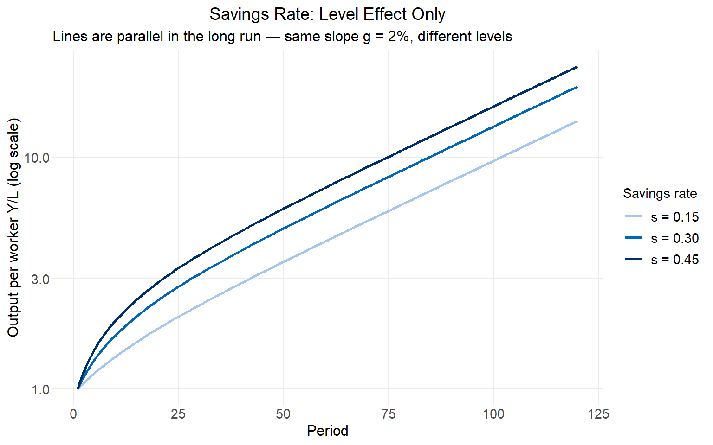
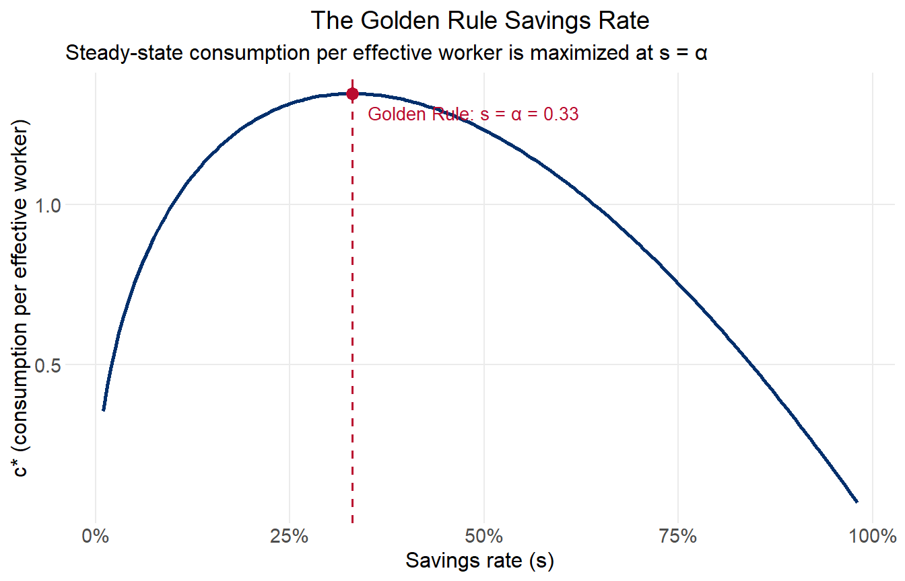

The Solow (1956) model is the standard starting point for thinking about long-run economic growth. Its central question is simple: why are some countries so much richer than others, and what determines the long-run standard of living? Its central answer is that capital accumulation — governed by saving, depreciation, and population growth — drives an economy toward a stable steady state, beyond which only exogenous technological progress can raise living standards further.
Setup
Production combines three inputs: physical capital \(K\), labor \(L\), and a technology index \(A\) that augments the productivity of each worker. The aggregate production function takes the Cobb-Douglas form:
Constant returns to scale in the rival inputs \(K\) and \(AL\) together: doubling both doubles output.
Diminishing returns to capital alone: holding \(AL\) fixed, each additional unit of \(K\) adds less than the last.
Labor-augmenting technology: \(A\) multiplies the effective size of the labor force. It grows exogenously at rate \(g\), so \(\dot{A}/A = g\).
Population (and labor supply) grows at rate \(n\), and capital depreciates at rate \(\delta\).
Per-Effective-Worker Form
It is convenient to normalize by effective labor \(AL\). Define:
\[k \equiv \frac{K}{AL}, \qquad y \equiv \frac{Y}{AL}\]
so that \(y = k^\alpha\). The capital accumulation equation \(\dot{K} = sY - \delta K\) transforms — via the chain rule — into:
\[\dot{k} = sk^\alpha - \underbrace{(n + g + \delta)}_{\text{break-even}} k \tag{2}\]
The break-even term \((n + g + \delta)k\) is the investment required just to hold \(k\) constant: capital wears out at rate \(\delta\), the workforce grows at rate \(n\), and technology growth at rate \(g\) means each worker becomes more productive, diluting \(k\) unless new capital keeps pace.
The Steady State
Setting \(\dot{k} = 0\) and solving:
\[sk^{*\alpha} = (n + g + \delta)k^* \implies k^* = \left(\frac{s}{n + g + \delta}\right)^{1/(1-\alpha)} \tag{3}\]
\[y^* = k^{*\alpha} = \left(\frac{s}{n + g + \delta}\right)^{\alpha/(1-\alpha)} \tag{4}\]
Output per worker (not per effective worker) at the steady state is \(Y^*/L = A \cdot y^*\), which grows at the exogenous rate \(g\). This is the model’s core limitation: in the long run, only \(g\) — which the model does not explain — determines the growth rate of living standards.
The Solow diagram plots investment \(sf(k)\) and break-even investment \((n+g+\delta)k\) against \(k\). Because \(f(k)\) is concave and the break-even line is linear, they intersect exactly once at \(k^*\). Higher savings shifts the investment curve up, raising \(k^*\) and \(y^*\) — a level effect, not a growth rate effect.
Code
library(tidyverse)library(patchwork)# Shared parametersalpha <-0.33n <-0.01# population growthg <-0.02# exogenous tech growthdK <-0.05# depreciationk_star <-function(s) (s / (n + g + dK))^(1/ (1- alpha))y_star <-function(s) k_star(s)^alphak_grid <-seq(0.01, 13, by =0.05)invest_lines <-bind_rows(tibble(k = k_grid, investment =0.20* k_grid^alpha, label ="s = 0.20"),tibble(k = k_grid, investment =0.30* k_grid^alpha, label ="s = 0.30"),tibble(k = k_grid, investment =0.40* k_grid^alpha, label ="s = 0.40")) |>mutate(label =factor(label))ks <-c(k_star(0.20), k_star(0.30), k_star(0.40))ggplot() +geom_line(data =tibble(k = k_grid, val = (n + g + dK) * k_grid),aes(k, val), linetype ="dashed", color = rich_black, linewidth =0.9) +geom_line(data = invest_lines, aes(k, investment, color = label), linewidth =1) +geom_vline(xintercept = ks, linetype ="dotted", color = medium_grey, linewidth =0.5) +annotate("text", x = ks +0.2, y =0.06,label =c("k*(0.20)", "k*(0.30)", "k*(0.40)"),size =3.2, color = medium_grey, family ="Source Sans Pro", hjust =0) +annotate("text", x =11.5, y = (n + g + dK) *11.5+0.06,label ="(n+g+\u03b4)k", size =3.5, color = rich_black,family ="Source Sans Pro") +scale_color_manual(values =c(light_blue, medium_blue, usaid_blue)) +coord_cartesian(xlim =c(0, 13), ylim =c(0, 1.1)) +labs(title ="The Solow Diagram",subtitle ="Each savings rate has a unique steady state; higher s raises the level of k*, not its growth rate",x ="Capital per effective worker (k)", y =NULL,color ="Investment sf(k)")

Convergence
A key prediction of the Solow model is conditional convergence: holding parameters fixed, all economies tend toward the same \(k^*\) regardless of where they start. Below \(k^*\), investment exceeds break-even, so \(k\) rises; above \(k^*\), the reverse. The speed of convergence is fastest when the economy is furthest from steady state — producing the characteristic concave approach path visible below.
This has an important empirical implication: poorer countries (with less capital per worker) should grow faster than richer ones, conditional on having similar fundamentals (\(s\), \(n\), \(g\), \(\delta\)). Unconditionally, poor countries may grow more slowly if they have lower savings rates or faster population growth.
Code
solow_sim <-function(T =120, k0, s =0.30, n =0.01, g =0.02,dK =0.05, alpha =0.33, A0 =1, label =NULL) { k <-numeric(T); y_eff <-numeric(T); A <-numeric(T) k[1] <- k0; A[1] <- A0; y_eff[1] <- k0^alphafor (t in2:T) { k[t] <- k[t-1] + s * k[t-1]^alpha - (n + g + dK) * k[t-1] A[t] <- A[t-1] * (1+ g) y_eff[t] <- k[t]^alpha }tibble(t =1:T, k = k, y_eff = y_eff, Y_per_worker = A * y_eff, label = label)}k_ss <-k_star(0.30)conv_sims <-bind_rows(solow_sim(k0 =1, label ="k\u2080 = 1 (below k*)"),solow_sim(k0 = k_ss, label ="k\u2080 = k* (at steady state)"),solow_sim(k0 =20, label ="k\u2080 = 20 (above k*)")) |>mutate(label =factor(label, levels =c("k\u2080 = 1 (below k*)","k\u2080 = k* (at steady state)","k\u2080 = 20 (above k*)")))conv_sims |>ggplot(aes(t, k, color = label)) +geom_line(linewidth =1) +geom_hline(yintercept = k_ss, linetype ="dashed", color = medium_grey) +annotate("text", x =115, y = k_ss +0.4, label ="k*",size =4, color = medium_grey, family ="Source Sans Pro") +scale_color_manual(values =c(light_blue, medium_blue, usaid_blue)) +labs(title ="Convergence to Steady State",subtitle ="All economies converge to k* regardless of starting point (s = 0.30)",x ="Period", y ="Capital per effective worker (k)", color =NULL)

The Savings Rate: Level Effect Only
Increasing the savings rate raises \(k^*\) and \(y^*\) permanently — but it does not permanently raise the growth rate of output per worker. On a log scale, higher-saving economies end up on a higher parallel track, but all tracks eventually have the same slope \(g\). This is the model’s defining result: policy can affect the level of prosperity but not its long-run trajectory.
Code
level_sims <-bind_rows(solow_sim(k0 =1, s =0.15, label ="s = 0.15"),solow_sim(k0 =1, s =0.30, label ="s = 0.30"),solow_sim(k0 =1, s =0.45, label ="s = 0.45", T =120)) |>mutate(label =factor(label, levels =c("s = 0.15", "s = 0.30", "s = 0.45")))level_sims |>ggplot(aes(t, Y_per_worker, color = label)) +geom_line(linewidth =1) +scale_y_log10(labels = scales::number_format(accuracy =0.1)) +scale_color_manual(values =c(light_blue, medium_blue, usaid_blue)) +labs(title ="Savings Rate: Level Effect Only",subtitle ="Lines are parallel in the long run — same slope g = 2%, different levels",x ="Period", y ="Output per worker Y/L (log scale)", color ="Savings rate")

The Golden Rule
While the steady state is stable for any \(s > 0\), not all savings rates are equally desirable. The Golden Rule savings rate \(s_{gold}\) is the one that maximizes steady-state consumption per effective worker:
\[c^* = y^* - (n + g + \delta)k^*\]
Taking the derivative with respect to \(k^*\) and setting it to zero:
This is the modified golden rule condition: capital’s marginal product equals the break-even rate. For the Cobb-Douglas production function, this simplifies to:
\[s_{gold} = \alpha \tag{5}\]
Economies saving above \(\alpha\) are dynamically inefficient: they are over-accumulating capital, sacrificing current consumption in exchange for no welfare gain. Economies saving below \(\alpha\) could increase welfare by saving more. With \(\alpha = 0.33\), the Golden Rule savings rate is 33%.
Code
s_gold <- alphas_grid <-seq(0.01, 0.98, by =0.005)gold_df <-tibble(s = s_grid,k_ss = (s_grid / (n + g + dK))^(1/ (1- alpha)),y_ss = (s_grid / (n + g + dK))^(alpha / (1- alpha)),c_ss = y_ss - (n + g + dK) * k_ss)c_gold <-with(gold_df[which.min(abs(gold_df$s - s_gold)), ], c_ss)gold_df |>ggplot(aes(s, c_ss)) +geom_line(color = usaid_blue, linewidth =1) +geom_vline(xintercept = s_gold, linetype ="dashed", color = usaid_red, linewidth =0.7) +geom_point(data =tibble(s = s_gold, c_ss = c_gold),aes(s, c_ss), color = usaid_red, size =3) +annotate("text", x = s_gold +0.02, y = c_gold -0.06,label =paste0("Golden Rule: s = \u03b1 = ", s_gold),color = usaid_red, size =3.5, hjust =0, family ="Source Sans Pro") +scale_x_continuous(labels = scales::percent) +labs(title ="The Golden Rule Savings Rate",subtitle ="Steady-state consumption per effective worker is maximized at s = \u03b1",x ="Savings rate (s)", y ="c* (consumption per effective worker)")

What Solow Cannot Explain
The Solow model delivers clean, testable predictions about levels and convergence, but it treats the most important variable — \(g\), the rate of technological progress — as exogenous and unexplained. In the model, all long-run growth in living standards ultimately comes from \(g\); capital accumulation only affects the level. This raises an obvious question: what determines \(g\)?
A second limitation is the scale effect the model implicitly embeds: larger economies (\(L\) larger) have higher \(AL\), so they produce more, but the model offers no mechanism by which size affects the growth rate.
These gaps motivated Romer (1990), who endogenized technological change by modeling the allocation of resources to R&D and the non-rival nature of ideas — the subject of the companion script.